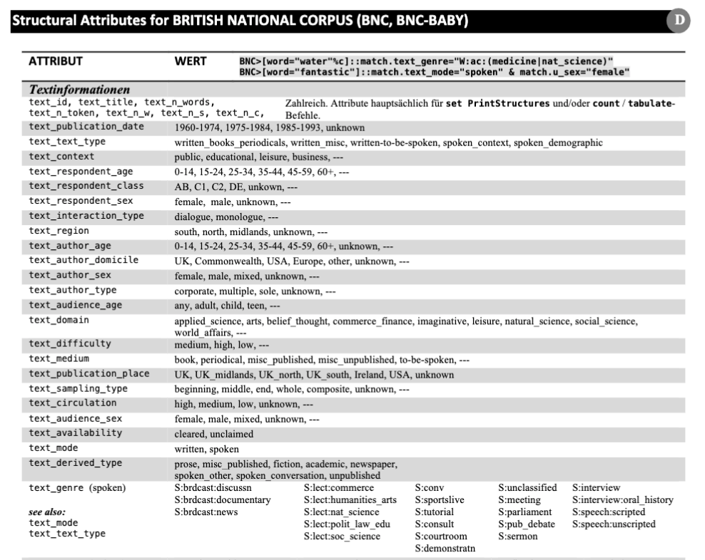
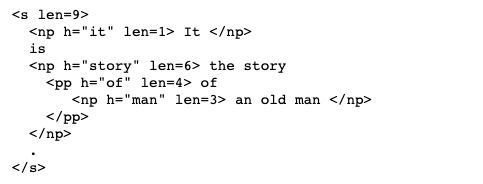
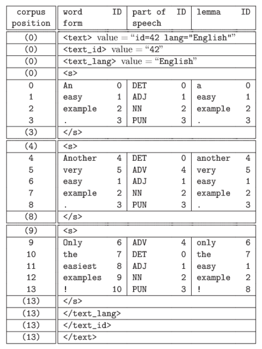

El análisis del español mediante los corpus
Introducción
Descripción del curso:
En este curso, utilizaremos los corpus para explorar cuestiones lingüísticas del español. Además, desarrollaremos un conocimiento más amplio del campo de la Lingüística de Corpus (LC), tanto como una perspectiva metodológica como una sub-disciplina dentro de las ciencias de la lengua. Los estudiantes aprenderán una variedad de técnicas para el estudio de los corpus, entre ellos el uso del UGA Corpus Server y el CQP Query Language. Las áreas de estudio incluirán (i) diferentes aspectos del análisis lingüístico (p.e. la semántica léxica, las colocaciones, la adquisición, y la variación gramatical) y (ii) algunas perspectivas del campo de las humanidades digitales sobre los textos electrónicos como la codificación, la manipulación de archivos, y (tal vez) la estilística. Los estudiantes tendrán que realizar proyectos de investigación originales en los cuales se integran las diferentes perspectivas y metodologías presentadas en clase. Los temas comparativos (p.e. el español y el portugués) también son bienvenidos.
1a Semana
¿Qué es un corpus?
En esta clase se introducirá el uso de los corpus para el análisis del español (y otras lenguas). Nuestra primera cuestión se contestará así
El análisis de corpus es el uso de métodos, normalmente computacionales, de colecciones de lengua humana con el fin de sacar conclusiones sobre el lenguaje o alguna característica de los usuarios del lenguaje (p.e. el/la autor(a), grupos demográficos, etc.).
Para este primer día de clase, hableremos de uso del UGA corpus server. El programa que utilizaremos hoy para explorar esta colección de corpus se llama el Corpus Query Processor (CQP). El CQP te ofrece ciertas herramientas que facilitan el proceso de trabajar con datos electrónicos. Se introducirán otras técnicas durante el curso, pero es sumamente importante que tengamos una base sólida del CQP para poder seguir con los temas del curso. Por favor, consulta los mandatos del CQP descritos en el Manual. Entiendo que el uso del CQP puede ser intimidante, pero espero poder guiaros paso a paso.
El uso del servidor
Para poder utilizar CQP, tenemos que empezar con un programa que nos permite acceso al server:
- Hay que conectar directamente al UGA campus network o al Virtual Private Network.
- Hay que tener una cuenta para el servir. Ya os he creado cuentas para todos. Estas cuentas requieren tu UGA myID y tu contraseña.
El server existe como parte del sistema operador de linus. Se puede convertir temporalmente la computadora donde trabajas en un terminal para el server mediante el uso del mandato ssh. Las instrucciones presentadas en el documento que se llama “Utilizing the UGA Corpus Server” describen este proceso.1 Para esta fase del curso, trabajaremos con dos programas que facilitan el proceso de acceder al servidor: Terminal (macOS) o Putty (Windows).
El primero paso al abrir el programa relevante (es decir, Terminal o Putty) será hacer el login con tu UGA myID. Una vez que se haya conectado al server, hay que iniciar CQP desde el mensaje (‘prompt’) de linux, con el uso de las etiquetas e y c:2
kucera $ cqp -eC
La etiqueta -e te ofrece opciones limitadas para revisar líneas del código, como el acceso a mandotos previous con el up-arrow key'. La etiqueta-C’ produce los colores que observas. Al comenzar, el mensaje de linux ($) se reemplaza con el mensaje del CQP, lo cual es [no corpus] en el estado inicial. Puedes pedir que te muestre la lista de los corpus disponibles así. Notad que todos los mandatos del CQP se debe finalizar con el punto y coma.
[no corpus]> show corpora;
Colección de corpora
No todos los corpus que existen como parte de la colección del Departamento de Lingüística de UGA son accesibles mediante CQP. Para averiguar más sobre un corpus partícular, utiliza el mandato info. Puedes salir de CQP con el mandato exit; otro uso de exit o logout te quitará del servidor.
Selección de corpus
2a Semana
Nuestra primera consulta
Las consultas más simples son palabras simples. Si se busca una palabra entre comillas (""), lo que se produce es una concordancia del tipo KWIC (‘Key Words in Context’) CQP, sección 2.3.
WUTHERING> "hardly" ;
Para navegar los resultados, hay que utilizar el spacebar (lo cual avanza los resultados página por página), el returEn key (línea por línea), o q para terminar la búsqueda. En la visualización de KWIC, la palabra que concuerda con tu consulta se identifica con corchetes ángulares. Los números a la izquierda representan posiciones en el corpus. Estos números se pueden suprimir con el siguiente mandato:
WUTHERING> show -cpos ;
Hay otras opciones que se pueden modificar. Por ejemplo, el mandato +cpos restaura los números para las próximas consultas. También, puedes pedir que CQP te produzca una cabecera para cada concordancia (CQP, sección 2.4). Para terminar con esta opción, hay que hacer el siguiente:
WUTHERING> show PrintOptions hdr;WUTHERING> show PrintOptions nohdr;
Contar los ejemplos
El CQP te puede contar los ejemplos de una palabra, pero es importante considerar lo significan estos números. Consideremos nuestra consulta de “hardly” con el corpus de WUTHERING. Se puede pedir que el CQP te cuente el número de ejemplos de la última consulta con el mandato count (CQP, sección 2.9).
WUTHERING> "hardly";WUTHERING> count by word;43 hardly [#0-#42]
El número que se encuentra a la izquierda es el número total de atestaciones de “hardly” en la novela Wuthering Heights–es decir, 43. Si comparamos este número con otra colección del siglo 19 (Charles Dickens, CQP sección 1.3), conseguimos los siguientes resultados:
WUTHERING> DICKENS;DICKENS> "hardly";DICKENS> count by word;451 hardly [#0-#450]
Con estos resultados, ¿debemos concluir que el uso de “hardly” es mayor en Dickens que el trabajo de Brontë? La respuesta es que NO. Si consultamos la información de estos dos corpus (con el mandato info), veremos que el tamaño (indicado en la sección de size) del corpus de DICKENS es mucho mayor (3.4 millones de casos de varios libros) que el de Wuthering Heights, con su 1.400 casos. Entonces, lo que tenemos que hacer es relativizar las frecuencias. Veremos esto más adelante.
Los casos (‘tokens’)
Los corpora son divididos en casos (‘tokens’) discretos. Un casos es simplemente un elemento que ocupa una posición específica. Típicamente, un caso es una palabra (sobre todo con los corpus canónicos), pero hay casos no tan claros. Por ejemplo, con el corpus de Wuthering Heights, la ‘s’ con el apóstrofe también es un caso.
WUTHERING> "'s'";
Las consultas con CQP son especificaciones de propiedades que deben de tener casos particulares. Por ejemplo, cuando escribimos la palabra “hardly” entre comillas, pedimos que CQP nos encuentre un caso que se escribe ‘h-a-r-d-l-y’. Dicho de otra forma, pedimos que nos de un caso donde el atributo word tiene con su valor la serie ‘h-a-r-d-l-y’. Encontonces, consulta que realizamos anteriomente es igual al siguiente:
WUTHERING> [ word="hardly" ] ;
Toda expresión que se escriba entre corchetes (“[…]”) describe un caso simple. Este método de realizar una consulta señala al CQP que lo que importa para esta consulta es la ortografía de la palabra. Sin embargo, los casos pueden tener otro atributos y podemos realizar una consulta con más de un conjunto de corchetes. La siguiente consulta encuentra casos de “hardly know” y “hardly knew” ya que las dos formas de la segunda forma comparten el mismo lema.
WUTHERING> [ word="hardly" ] [ lemma="know" ] ;
Los lemas están disponibles como atributo adicional en algunos de los corpus que se encuentran en el servidor. Nos facilita el proceso de buscar casos sin preocuparnos de formas variantes morfológicas.
Si no imponenos ninguna restricción y dejamos que los corchetes estén vacíos, el CQP nos encuentra todos los casos que concuerden con estas posiciones. Así que, ¿cuáles son las palabras que co-ocurren con “hardly”?
WUTHERING> [ ] [ lemma="know" ] ;WUTHERING> count by word ;
Para especificar la consulta, podemos añadir el elemento cut que requiere que no se imprima las concordancias con menos de un número específico de casos.
WUTHERING> count by word cut 2 ;
Con los resultados del mandato count, se nota que el número a la izquierda representa el número total de casos de secuencias de dos palabras que aparecen con “hardly” en Wuthering Heights. Se nota que el grupo más frecuente es la secuencia “I hardly”, seguida de grupos con los verbos modales can y could. Ahora, inténtalo con el corpus de Dickens.
¿y qué pasa con un corpus mucho más grande como el NYT (1.35 mil millones de palabras)?
Secuencias con ‘hardly’ en el NYT
En el estilo del periodisimo representando por el corpus del NYT, se observa que las combinaciones con los verbos copulativos y los verbos modales son las secuencias más frecuentes, mientras que la secuencia de “I hardly” no es tan prominente. Lo que nos muestran estos resultados es que los corpus nos ofrecen una forma de observar el uso lingüístico. Es obvio pero importante destacar que el análsis lingüístico mediante corpus depende de los corpus, que son muestras de una lengua. Estas muestras son ejemplos de registros, estilos y contextos específicos. Si replicamos la misma consulta con el Spoken British National Corpus del año 2014, vemos de nuevo que la secuenca “I hardly” es algo frecuente. El texto de los periódicos, la producción literaria y el habla son todos registros distintos.
Secuencias con ‘hardly’ en el Spoken BNC 2014
Pregunta: Con el uso del corpus ANCORA, contesta las siguientes preguntas:
- ¿Cuántos casos hay de la palabra todo en el corpus?
- ¿Cuáles son las formas de la palabra todo en el corpus?
- ¿Cuántos casos hay de cada uno de estas formas?
- ¿Cuáles son las palabras que ocurren antes de la palabra todos? Y después?
Las distribuciones
En el análsis de corpus, a veces queremos ignorar variaciones que ocurren como función de, por ejemplo, la ortografía. Si utilizamos el corpus BNC-BABY (una muestra limitada del BNC), podemos ignorar la diferencias entre letras mayúsculas y minúsculas con la etiqueta %c.
BNC-BABY> [ word="bank"];BNC-BABY> [ word="bank" %c];
También, podemos buscar por lemas; es decir, variantes morfológicas de una palabra:
DICKENS> [ lemma="go" ] ;
Los elementos word y lemma son atributos posicionales; es decir, son definidos para cada caso para toda posición en el corpus. Los otros atributos posicionales se pueden averiguar con el corpus actual/activo mediante el mandato show cd.
Consultas con nombre
Las consultas se pueden nombrar:
ANCORA> Ahora = "ahora";
Nótete que no se produce un resultado. Sin embargo, podemos utilizar el output de esto proceso para ver, por ejemplo, la concordancia. Por ejemplo, con el mandato cat, podemos pedir que nos muestre la concordancia. También, podemos encontrar el número de casos con el mandato size (CQP, sección 3.1).
ANCORA> cat Ahora;ANCORA > size Ahora;
De hecho, todas las consultas reciben, por defeto, el nombre Last. Si realizas una consulta sin especificar un nombre, puedes asignar un nombre con el “=”.
ANCORA> "desde" ;ANCORA> d = Last ;ANCORA> "entonces" ;ANCORA> show named;
El mandato show named produce una lista de todas las consultas que se han hecho durante la sesión actual, entre ellas los que tienen el nombre implícito de Last. Estas consultas se guardan en la memoria (m) y desaparecen cuando terminas las sesión, o si pides que las discartes.
El mandato group
El mandato group es similar a otros mandatos de CQP como cat, sort, count, y size en que requiere el nombre de una consulta como un argumento. En el siguiente ejemplo, la consulta tiene el nombre K. Luego, aplicamos el mandato group a la consulta K y pedimos que nos muestre la distribución de frecuencias de las palabras que concuerden con la consulta:
El uso del mandato group
El mismo grupo de mandatos también se pueden aplicar a las consultas de casos múltiples. Pregunta: ¿Cuánto son los casos de combinaciones de dos palabras como “knock out”?
Casos de “knock out”
Ahora podemos aplicar el mandato group a esta consulta también. Solo tiene que especificar cuál es el grupo que queremos. En esta situación, queremos la primera palabra a la derecha del elemento que buscamos, de acuerdo con su atributo de word.
Casos de “knock out”
Según estos resultados, los casos de “knock out” son menos frequentes que los casos de “knock on”. Con el uso de la palabra clave by, podemos crear una tabla de dos dimensiones para considerar detalladamente esta distribución. En este caso, hw significa ‘headword’, lo cual representa el atributo del BNC que identifica la raíz morfológica (similar a lemma).
Casos de “knock out”
Estos números en la columna a la derecha del output de group representan una distribución de frecuencia. Son una medida cuantitativa que describe la frecuencia de de una forma partícular.
Los metadatos (‘metadata’)
El término ‘metadata’ se refiere a esta información que describe los diferentes aspectos (sociales, dialectales, entre muchos otros) del corpus. Por ejemplo, abajo se presentan algunos de los atributos disponibles con el BNC:
 Podemos utilizar estos atributos para realizar una consulta más precisa:
BNC-BABY>[word="fantastic"]::match.text_mode="spoken" & match.u_sex="female";
Con esta consulta, estamos buscando la palabra ‘fantastic’, pero hemos especificado que queremos de los casos (i) de la porción oral del corpus (match-text_mode="spoken") y (ii) producidos por las personas indicadas como mujeres (match.u_sex="female"). Estos atributos se describen como s-attributes (donde la s = ‘estructura’). El corpus de EUROPARL-ES, por ejemplo, contiene los siguientes s-attributes:
 Se puede encontrar más información sobre estos atributos en la documentación sobre el corpus. Como un ejemplo, el atributo
Se puede encontrar más información sobre estos atributos en la documentación sobre el corpus. Como un ejemplo, el atributo speaker_language indica la lengua original del hablante que produjo el caso.
Para ver un ejemplo tal vez más concreto, consideremos el corpus BNC-BABY, un sub-corpus del BNC. Con la siguiente consulta, utilizamos el mandato match para pedir los casos de la palabra ‘lovely’ según el sexo del/de la autor(a):
BNC-BABY> L = "lovely";BNC-BABY> group L match text_author_sex ;
Casos de “lovely” en el BNC según sexo
Podemos también utilizar el elemento :: para indicar un ‘global constraint’ (manual de CQP, sección 4.1). En la siguiente consulta, definimos un elemento (‘M’) que contiene los casos de la palabra “mate”. Además, especificamos (con el ::) que no queremos casos que tengan el valor “unknown”.
Casos de “mate” en el BNC según edad
3a Semana
Los verbos modales3
En inglés, existe una clase de verbos auxiliares que expresan la “modalidad”:
In linguistics and philosophy, modality is the phenomenon whereby language is used to discuss non-actual situations. For instance, a modal expression may convey that something is likely, desirable, or permissible. Quintessential modal expressions include modal auxiliaries such as English “should” Descripción
Según Biber (2012), los verbos modales son más comunes en la lengua hablada que en el lengua escrita. Su argumento se basa en el corpus Longman Spoken and Written English (40 millones de palabras). Examinemos la hipótesis de Biber con el BNC (100+ millones de palabras).
BNC> SPOK = "should" :: match.text_mode="spoken";BNC> WRIT = "should" :: match.text_mode="written";BNC> size SPOK;11676BNC> size WRIT;94884
Debemos reconocer que estos resultados parecen producir una asimetría, pero que no concuerda la hipótesis de Biber. Hasta ahora, hemos ignorado que las secciones orales y escritas del BNC no son de tamaños equivalentes. Los valores del verbo should se tienen que relativizar para que comparemos dos corpus de tamaños distintos. Para hacer esto, podemos pedir que el CQP nos produzca una total de palabras en las secciones correspondientes con una consulta sin ninguna restricción; es decir, unos corchetes vacíos.
BNC> ALLSPOK = [ ] :: match.text_mode="spoken";BNC> size ALLSPOK;11983120BNC> ALLWRIT = [ ] :: match.text_mode="written";BNC> size ALLWRIT;100119205
Ahora tenemos la información cuantitativa que se necesita para poder determinar la realización relativizada (por millón de palabras-wpm).
- shouldBNCspoken = \(\frac{11676 x 1000000}{11983120}\) = 974.3wpm
- shouldBNCwritten = \(\frac{94884 x 1000000}{11983120}\) = 947.4wpm
Según estos resultados, se nota la preponderancia de la palabra should en la sección escrita (974 wpm) comparada con la sección oral (947 wpm). Estas frecuencias se llaman frecuencias relativas (‘relative frequencies’) en el sentido descrito por Brezina (2018, p. 43)
La historia y la geografía
Esta sección ignora una variedad de otros factores, como el registro, que sirven como vehículos sociales del uso lingüístico. Examinemos la distinción entre ‘can’ y ‘may’a través de uno de estos factores. Biber (2012, p. 203) nos dice que el verbo ’may’ se está perdiendo por cuestión del cambio lingüístico. ¿Se manifiesta este fenómeno en algún registro específico?
Para empezar, observemos los géneros específicos anotatos en el BNC. Podemos observar los valores de este atributo con otra consulta sin restricción, combinado con el uso del mandadto group.
Los géneros del BNC
Este ejemplo del mandato group nos permite observar todos los valores del atributo text_derived_type en el corpus. Estas categorías se describen en el documento de Susanne Flach con una tabla de los metados del BNC. Con el uso de la restricción global ::, se puede concentrar en un género específico:
La distribución de ‘may’ y ‘can’ en el BNC (newspaper)
Esta diferencia de distribuciones concuerda con lo que dice Biber cuando propone que ‘may’ es menos frecuente que ‘can’. ¿Cómo compara estos datos con el inglés de los EE.UU.? Utilizemos el Brown Corpus, lo cual representa el primer corpus de tamaño grande para el inglés americano. Toma su nombre de Brown University donde fue creado en el año 1961 por Henry Kučera y W. Nelson Francis. La próxima tabla muestra de diferentes textos incluídos en este corpous.
- Tabla 1: Muestra de la distribución en el corpus de Brown
| Genre | Subgenre/Topic Area | Samples | |
|---|---|---|---|
| Non-fiction | Religion | Books | 7 |
| Periodicals | 6 | ||
| Tracts | 4 | ||
| Skills and Hobbies | Books | 2 | |
| Periodicals | 34 | ||
| Popular Lore | Books | 23 | |
| Periodicals | 25 | ||
| Belles Lettres, Biography, Memoirs, etc. | Books | 38 | |
| Periodicals | 37 | ||
| Miscellaneous | Government Documents | 24 | |
| Foundation Reports | 2 | ||
| Industry Reports | 2 | ||
| College Catalog | 1 | ||
| Industry House organ | 1 | ||
| Learned | Natural Sciences | 12 | |
| Medicine | 5 | ||
| Mathematics | 4 | ||
| Social and Behavioral Sciences | 14 | ||
| Political Science, Law, Education | 15 | ||
| Humanities | 18 | ||
| Technology and Engineering | 12 | ||
| Fiction | General | Novels | 20 |
| Short Stories | 9 | ||
| Mystery and Detective | Novels | 20 | |
| Short Stories | 4 | ||
| Science Fiction | Novels | 3 | |
| Short Stories | 3 | ||
| Adventure and Western | Novels | 15 | |
| Short Stories | 14 | ||
| Romance and Love Story | Novels | 14 | |
| Short Stories | 15 | ||
| Humor | Novels | 3 | |
| Essays, etc. | 6 | ||
| Press | Reportage | Political | 14 |
| Sports | 7 | ||
| Society | 3 | ||
| Spot news | 9 | ||
| Financial | 4 | ||
| Cultural | 7 | ||
| Editorial | Institutional | 10 | |
| Personal | 10 | ||
| Letters to the Editor | 7 | ||
| Reviews (theatre, books, music, dance) | 17 |
Use show cd to discover a metadata attribute that identifies a text’s “Subgenre/Topic Area” in Brown. Did you notice text_category? Again, an unconstrained query reveals what the possible values are:
Podemos utilizar cd para descubrir los atributos que identifican los “Subgenre/Topic Area” de los textos de Brown. También podemos utilizar una consulta sin restricción:
BROWN> ALL = [ ] ;group ALL match text_category:
Ahora, ¿se observa la misma asimetría entre ‘may’ y ‘can’ en el inglés americano?
La distribución de ‘may’ y ‘can’ en el corpus de Brown (newspaper)
Parece que sí; el verbo ‘may’ es menos frecuente, tanto en la muestra inglesa como en la muestra americana, que el verbo ‘can’ en los textos periodísticos.
- Tarea: Examina los verbos ‘may’ y ‘can’ en el género
fiction. ¿Se observa la misma asimestría? ¿Cómo se comparan los datos del inglés británico y el inglés americano? Ahora, exmamina la categoría de textos con el valorlearnedoacademic. ¿Está disminuyendo el verbo ‘may’ en estos géneros?
Contruir una hipótesis
En la sección anterior, se presentó la idea de que el verbo ‘may’ está desapareciendo en inglés, tal vez debido al uso elevado del verbo ‘can’ para expresar los mismos signficados. En esta sección, examinemos nuestra propia hipótesis sobre los modales de obligación (deónticos), ‘should’ y ‘ought’.
- Hipótesis: El verbo ‘should’ ha reemplazado la forma ‘ought’, lo cual expresa aproximadamente el mismo significado.
Una hipótesis es una adivinanza educada. Sin embargo, si es verdad, debemos observar menos casos de ‘ought’ que ’should.
La distribución de ‘should’ y ‘ought’ en los corpora de Brown y del BNC
Parece que, sí, esta hipótesis es válida. Las tasas de atestación de ‘should’ y ‘ought’ se diferencian por un ordén de magnitud entre los dos corpus.
- Tabla 2: Frecuencias normalizadas en dos corpora del inglés
| expresión | Brown | BNC |
|---|---|---|
| should | \(\frac{865 x 1M}{brownsize}\) = 744wpm | \(\frac{106597 x 1M}{bncsize}\) = 950wpm |
| ought | \(\frac{66 x 1M}{brownsize}\) = 56wpm | \(\frac{5757 x 1M}{bncsize}\) = 51wpm |
Ahora, comparemos la forma modal de obligación ‘must’ con su homólogo ‘have to’. ¿Qué pensamos sobre la siguiente hipótesis?
- Hipótesis: La estructura ‘have to’ es menos formal que ‘must’.
Si esta hipótesis es correcta, esperamos tener más casos de ‘have to’ que ‘must’ en un género informal como spoken_conversations.
BNC> HT = "have" "to" :: match.text_derived_type="spoken_conversation";BNC> M = "must" :: match.text_derived_type="spoken_conversation" ;BNC> size HT;5141BNC> size M;2780
Vemos que nuestra hipótesis es correcta. ¿Qué observamos en un género como la escritura académica?
BNC> M = "must" :: match.text_derived_type="academic";BNC> HT = "have" "to" :: match.text_derived_type="academic";BNC> size M ;13514BNC> size HT ;3615BROWN> M = "must" :: match.text_category="learned";
BROWN> HT = "have" "to" :: match.text_category="learned";BROWN> size M ;202BROWN> size HT ;24
En un género formal, se obsera que hay más casos de ‘must’ comparado con ‘have to’, un resultado que es consistente con nuestra hipótesis. [Dejamos el proceso de la normalización como una tarea de casa.]
Las listas de palabras
El trabajo de Biber (2012) identifica tres tipos de significados que puden expresear los verbos modales del inglés:
- permisión o posibilidad
- obligación o necesidad lógica
- voluntad o predicción
Cada uno de estos significados se pueden asociar con una lista de palabras. El CQP ofrece un mecanismo (manual, sección 6.2) que permite definir una lista y asociar palabras específicas con estas listas. Este proceso hace posible evitar la necesidad de escribir manualmente secuencias largas separadas por barras verticales.
BROWN> define $perm = "can could may might"BROWN> define $oblig = "must should ought"BROWN> define $volit = "will would shall"
Estas variables, cuyos nombres comienzan con un $, se pueden utilizar en toda situación en la cual se podría haber utilizado una seria individual en una consulta.
BROWN> O = $oblig ;BROWN> group O match text_category ;BNC> O = $oblig ;BNC> group O match text_derived_type ;
¿Qué observamos en cuanto a la formalidad con estos resultados? Ahora podemos forma la unión de todas las formas modales:
BNC> define $modal = $permBNC> define $modal += $obligBNC> define $modal += $volitBNC> show $modal$modal = can could may might must should ought will would shall
La posibilidad de referirse a todas las formas modales a la vez facilita la búsqueda de las formas modales dobles. Estas formas se aceptan en algunas variedades del inglés.
Las formas modales dobles en el inglés
Algunos de estos casos parecen ser errores, los cuales son inevitables en un corpus. Otros casos no son modales de verdad; por ejemplo, la palabra ‘will’ se entiende también como el sustantivo voluntad.
1433741433: at his will be done . And <God 's will will> be done voice-over And i429416972: at this second gesture of <good will will> be met with a similar ge429589131: this humanitarian aid and <good will will> help bring down some of297895587: ple call you . Enough ill <will can> turn anything into an at325323612: official . But political <will can> be found " to do more to486055689: message to them that our <will can> not be broken by terror
Sin embargo, si observamos de forma más específica los casos de la forma ‘might could’, se encuentran algunos casos legítimos. En cuanto a la comparación entre el inglés británico y el inglés americano: no existe ningún caso en el BNC y solo se encuentran dos casos en el SPOKENBNC2014, los cuales no parecen ser casos legítmos. Estas observaciones son consistentes con el uso de ‘might could’ con un fenómeno especificamente americano. (p. 44 de Hoffman et al.)
Las expresiones regulares con el CQP
Las expresiones regulares representan una notación para especificar diferentes conjuntos de ‘strings’. Con una consulta de corpus, se utilizan las expresiones regulares para determinar el conjunto de casos posibles que podemos obtener con la consulta. Las expresiones regulares se puden utilizar en cualquier posición en el CQP y su descripción se presenta en el Appendix A.1 del manual. Hay una variedad de diferentes sabores de expresiones regulares; la versión de CQP del servidor utiliza expresiones regulares ’normales de unix (es decir, no son compatibles con la lengua perl). Por el momento, estas distinciones no nos distraen.
El ‘wildcard’
Busquemos las diferentes formas del verbo ‘drink’ en el BNC-BABY. Sería posible realizar consultas distintas o, por ejemplo, definir un grupo con el uso de la pipa |. Otra opción, es dejar que la vocal no se especifique con el símbolo . .
BNC-BABY> DRINK = "drink|drank|drunk" ;BNC-BABY> "dr.nk" ;
| Palabra | Frecuencia |
|---|---|
| drink | 552 |
| drunk | 99 |
| drank | 67 |
No hay que saber de antemano cuáles serán los elementos que se encuentren. Las letras ~d, r, n, y k~ se expresan explícitamente. Entonces, las expresiones regulares incluyen los tipos de palabras completas (es decir, con todas las letras explícitas) que ya hemos buscado con las consultas.
Clases de carácteres
¿Cuáles son las palabras de cinco letras que empiezan con ‘gl’ y una vocal? Se puede especificar esto con el uso de las vocales ortográficas entre corchetes [ ].
BNC-BABY> "gl[aeiou].." ;BNC-BABY> group Last match word cut 10 ;
| Palabra | Frecuencia |
|---|---|
| glass | 389 |
| glory | 46 |
| gloom | 28 |
| glare | 19 |
| glove | 14 |
| gloss | 12 |
| glide | 11 |
Este ejemplo arriba utiliza el punto dos veces para pedir casos de cinco letras, donde no se especifica el carácter específico de las dos últimas letras. Fíjate que estas consultas responden al tipo de letra (es decir, mayúscula vs. minúscula). La siguiente consulta produce casos de palabras (a) con cinco letras y (b) con una letra inicial mayúscula.
BNC-BABY> "[ABCDEFGHIJKLMNOPQRSTUVWXYZ].... ;
Estos corchetes no son iguales a los que hemos utilizado antes con las consultas de CQP (e.g., [word = "lovely"]). Representan una lista explícita de los carácteres individuales que se pueden encontrar en la posición inicial de la palabra.
Un rango de carácteres
La consulta que realizamos con las letras mayúsculas se pueden re-escribir de forma más concisa. Dentro de los corchetes, podemos especificar un rango de carácteres con el uso de un guion.
BNC-BABY> "[A-Z]...." ;
Ahora podemos verificar que esta consulta produce los mismos resultados que la última. El ordén que se utiliza para definir los rangos sigue el American National Standard for Information Exchange (ANSI). En el prompt de unix, puedes leer más con el mandato man ascii.
La morfología
La opcionalidad:
Hay una variedad operadores que especifican la repetición. El signo de interrogación (?) indica que la expresión regular que precede es un elemento opcional; es decir, se puede repetir zero o una vez. Por ejemplo, podemos utilizar esta operador para buscar las formas singulares y plurales de una palabra como ‘dog’ si indicamos que la s es opcional.
BNC-BABY> "dogs?" ;
| Palabra | Frecuencia |
|---|---|
| dog | 321 |
| dogs | 140 |
Este operador se puede colocar en cualquier parte del string. Por ejemplo, podemos observar variaciones ortográficos del inglés británico y el americano.
BNC-BABY> "favou?r" ;BNC-BABY> group Last match word by match text_id cut 10 ;
| Texto | Palabra | Frecuencia |
|---|---|---|
| ACJ | favour | 16 |
| J57 | favor | 11 |
Si consultamos el texto J57 en la bibliografía contenida con el Reference Guide for the British National Corpus, se nota que este texto es un libro de texto sobre Inglaterra cuyo audiencia tal vez sea estudiantes americanos.
Agrupar:
Dentro de una expresión regular, los elementos se pueden agrupar con el uso de los paréntesis. De allí, los operadores de repetición (como ?) se pueden aplicar al grupo entero. Esta posibilidad nos facilita el proceso de observar de la opcionalidad de, por ejemplo, el prefijo un- en inglés:
BNC-BABY> "(un)?thinkable" ;BNC-BABY> group Last match word ;
| Palabra | Frecuencia |
|---|---|
| unthinkable | 11 |
| thinkable | 1 |
o con el sufijo -ren de ‘children’.
BNC-BABY> "child(ren)?" ;BNC-BABY> group Last match word ;
| Palabra | Frecuencia |
|---|---|
| children | 1541 |
| child | 782 |
La alternación:
Como ya hemos visto, la barra vertical (la pipa), puede separar las series alternativas. Por ejemplo, podemos combinar el uso de los operadores de opcionalidad y de repetición para considerar más bases léxicas:
BNC-BABY> "(un)?(think|know|believ|answer|recover)able";BNC-BABY> group Last match word ;
| Palabra | Frecuencia |
|---|---|
| unbelievable | 21 |
| unthinkable | 11 |
| recoverable | 8 |
| unanswerable | 7 |
| answerable | 6 |
| unknowable | 5 |
| believable | 1 |
| thinkable | 1 |
Esta diferentes bases, separadas por barras verticales, se tratan como alternativas disyuntivas. No se aplican un operador de repetición, lo cual significa que una de las alternativas tienen que corresponder en la consulta. Además, el prefijo (la serie) -able tiene que aparece al final de la palabra buscada.
Las alternativas disjuntivas son útiles en el proceso de encontrar formas morfológicas de verbos (regulares). Para leer más sobre “Complex Regular Expression”, se debe consultar el manual (A.1).
BNC-BABY> "(call|talk|help)(s|ed|ing)" ;
| Palabra | Frecuencia |
|---|---|
| called | 1279 |
| talking | 740 |
| helped | 315 |
| calls | 223 |
| talked | 192 |
| talks | 178 |
| calling | 144 |
| helping | 122 |
| helps | 80 |
El uso del ‘plus’ (y otros):
El operador plus (+) señala que queremos una o más repeticiones de un elemento (o grupo de elementos). Como el signo de interrogación, es un operador sufijo (‘postfix’) que se aplica a la expresión regular que precede. Si el elemento o la expresión que precede es el operador de ’wildcard, podemos encontrar, por ejemplo, todas las palabras que terminan con -ly–es decir, los adverbios en inglés.
BNC-BABY> ".+ly" ;
Bueno, se nota que no todos los casos encontrados son adverbios (p.e., ‘Holly’). Refinemos esta consulta mediante el rasgo que vimos con las listas de palabras (manual, sección 6.2). El operador != señala que no debe corresponder (manual, sección 2.5). El signo & significa ‘and’ y requiere que los casos encontrados concuerden con las dos restricciones especificadas–es decir, que terminen con -ly y que no sean “stopwords”.
BNC-BABY> define $nothanks = "Holly Billy Italy July" ;BNC-BABY> [ word = ".+ly" & word != $nothanks ] ;
El proceso de descubrir las excepciones (p.e. Sally y Willy) es iterativo. Al encontrar estas palabras, se pueden añadir a la lista de stopwords.
Una cantidad específica de repeticiones:
Las llaves ({ }) permiten que especifiquemos un número específico, o un rango número de repeticiones. Por ejemplo, podemos revisar una de nuestras consultas anteriores de la siguiente manera:
BNC-BABY> "gl[aeiou].{2}";
Negación de un rango:
Además, podemos definir de manera negativa con el uso del signo de intercalación (^), indicado al inicio de una lista de carácteres. En este caso, estos carácteres no se deben incluir con las correspondencias. Como ejemplo, presento la siguiente consulta que intenta caracterizar todas las palabras monosilábicas del inglés con un ataque consonantal, un núcleo vocálico, y una coda, donde el ataque y la coda son opcionales y consisten de, como máximo, tres letras.
BNC-BABY> MONOSYLL = "[^aeiou]{0,3}[aeiou]+[^aeiou]{0,3}";
Otra vez con la morfología
Ahora, volvamos a Wuthering Heights. Si pedimos todas las palabras que terminan con -ity, ¿cuáles son las categorías gramaticales que esperamos encontrar?
WUTHERING> ".+ity";
Si consultamos el info de WUTHERING con el mando show cd. Las palabras de este corpus tienen las etiquetas de clase léxica (‘Parts of Speech’ / pos).
WUTHERING> group Last match pos ;
Y, ¿qué decimos sobre las palabras que terminan con -ous? ¿Cuál es la léxica de estas palabras? Utilicemos el atributo de pos de WUTHERING para probar esta cuestión. Podemos pedir que el CQP nos muestre en el KWIC (‘Key-Words-In-Context’) estas etiquetas con el siguiente mandato:
WUTHERING> show +pos ;
Cambiamos este valor con el siguiente mandato show -pos. Las etiquetas para las clases léxicas se pueden leer en el manual (sección A.2.0.1).
Ahora busquemos las palabras con el sufijo -ful.
WUTHERING> ".+ful" ;WUTHERING> group Last match pos ;
¿Qué encontramos? ¿Cuáles son las clases léxicas de las palabras excepcionales (es decir, palabras que no sean adjetivos) como ‘spoonful’ y ‘mouthful’? Utilicemos una consulta disjuntiva para encontrar todos los miembros de esta categoría minoritaria.
WUTHERING> [ word = ".+ful" & pos=ALGO QUE TÚ ESPECIFICAS];
¿Y qué pasa con el sufijo -less? ¿Cuál son los marcadores discursivos que no sigan la generalización? Hagamos la misma búsqueda con el subconjunto de Wuthering Heights que se encuentra en el BNC.
BNC> ".+less" :: match.text_id = "GWH" ;68775950: /PRF a/AT0 wild/AJ0 ,/PUN <hatless/AJ0> girl/NN1 ,/PUN we/PNP sa68776660: VVD ,/PUN hot/AJ0 and/CJC <breathless/AJ0> ./PUN ``/PUQ That/DT0 'l68778512: you/PNP tonight/AV0 ,/PUN <unless/CJS> perhaps/AV0 I/PNP set/VV68780542: N1 ,/PUN wild/AJ0 and/CJC <breathless/AJ0> ./PUN She/PNP threw/VVD68788920: ,/PUN and/CJC arrived/VVD <breathless/AJ0> at/PRP Wuthering/VVG Hei68791639: y/PRP next/ORD summer/NN1 <unless/CJS> you/PNP help/VVB him/PNP
Se puede consultar el conjunto de etiquetas (CLAWS5) aquí. Esta comparación muestra que el mismo texto se puede interpretar con dos equemas diferentes de anotación léxica. Cada equema viene con su propia perspectiva teórica.
Tareas (8 de sept.)
1a Parte: Con el uso del atributo pos, utiliza CQP para encontrar los sustantivos más observados en el corpus de Ancora. Determina si este resultado es esperado o no esperado de acuerdo con el “sampling frame” de Ancora (según el capítulo 1, sección 1.4 de Brezina).
2a Parte: ¿Cuáles son la segunda palabra y la tercera palabra más observadas en el corpus Ancora que (a) tienen una letra mayúscula inicial y (b) continúan con todas letras minúsculas? Crea una expresión regular para encontrar estas palabras que exluya las siglas. Otra vez, compara tus resultados con el sampling frame de Ancora.
3a Parte: Utiliza los operadores de alternativas y de repetición para crear una expresión regular que encuentre todas las formas del presente del verbo lire ‘to read’ del francés. Utiliza el corpus FRWAC para buscar estas formas del verbo lire.
Verifique los resultados por una consulta de las clases léxicas observadas. ¡Cuidado! La palabra francesa para ‘cama’ tiene la misma forma ortográfica que una de las formas verbales del verbo lire. Revisa tu consulta para que las formas de ciertas clases léxicas se excluyan.
4a Semana
Más sobre las clases léxicas
Como que describimos en la clase anterior, muchos corpus tienen las anotaciones léxicas. El CQP permite que definamos fácilimente una búsqueda con etiquetas particulares. El siguiente ejemplo muestra las palabras con la etiqueta del determinante DT.
DICKENS> [ pos = "DT" ] cut 10;<A> CHRISTMAS CAROL by Charlens I have endeavoured in <this> Ghostly little book , toly little book , to raise <the> Ghost of an Idea , whichk , to raise the Ghost of <an> Idea , which shall not p
Podemos pedir que las etiquetas se vean con el siguiente mandato:
DICKENS> show +pos;<A/DT> CHRISTMAS/NP CAROL/NN by10: VBP endeavoured/VBN in/IN <this/DT> Ghostly/JJ little/JJ boo17: ook/NN ,/, to/TO raise/VB <the/DT> Ghost/NN of/IN an/DT Ide
Con los corpus tempranos, las etiquetas se asignaron manualmente; luego, estos datos manuales sirvieron como apoyo estadístico para los “POS-Taggers” automáticos que son imperfectos. Fue medio complicado el proceso de determinar las etiqutas. Por ejemplo, en el trabajo de Beatrice Santorini (1990) se describen algunas decisiones confusas en la sección “Confusing Parts of Speech” (p. 9.)
Algunas búsquedas
¿Cuáles son los sustantivos comunes más utilizados por Charles Dickens?
DICKENS> Nouns = [ pos = "NN" ];DICKENS> group Nouns match word cut 2000;
| Palabra | Frecuencia |
|---|---|
| man | 5923 |
| time | 5100 |
| Mrs | 3797 |
| hand | 3530 |
| head | 3479 |
| gentleman | 3319 |
| sir | 3289 |
| way | 3247 |
| face | 2985 |
| day | 2730 |
| night | 2571 |
| door | 2543 |
| lady | 2511 |
| room | 2367 |
| house | 2223 |
| nothing | 2133 |
| friend | 2022 |
Entre dos palabras
Los corchetes vacíos se pueden utilizar elementos sin propiedades. Con otras expresiones regulares, como el plus, podemos especificar que, por lo menos debe haber un elemento que ocurre entre dos palabras.
DICKENS> "either" []+ "or";...DICKENS> size Last;453
Ahora podemos imponer más restricciones con esta consulta. Por ejemplo, podemos requerir que los casos aparezcan en posición interna de oración o podemos eliminar los casos de ‘either’ como un determinante. Acordáos que el signo de exclamación es el operador de negación (manual, sección 2.6).
DICKENS> [ word="either" & !pos="DT"] []+ "or" within s;DICKENS> size Last;199
Podemos seguir con aun más restricciones. Por ejemplo, podemos requerir que solo pueda haber cinco o menos casos entre ‘either’ y ‘or’.
DICKENS> [ word="either" & !pos="DT"] []{1,5} "or" within s;`DICKENS> size Last;131
Los verbos frasales con “out”
¿Cuáles son los verbos que co-ocurren con la palabra “out”? Este ejemplo incluye el uso de las consultas nombradas. El signo arroba (@) determina el blanco. Los usuarios del CQP pueden agrupar los resultados según el blanco de la consulta. En este caso, el mandato cut define un límite; es decir, los resultados que se observan menos de 10 veces no se muestran.
DICKENS> PhrasalV = @[ pos="V.*" ] [ word="out" ];DICKENS> group PhrasalV target word cut 10;
Pregunta ¿Son todos estos casos “verbo” + “out”? ¿Cómo se sabe?
Más con secuencias de palabras
Podemos utilizar las expresiones regulares al nivel del de los casos también (sección 2.7 del manual).
DICKENS> [pos = "IN"] [pos = "DT"]? ( [pos = "RB"]? [pos = "JJ.*"]) * [pos = "N.*"]+ ;
¿Qué significa exactamente esta consulta?
El caso en el alemán
El mandato show revela otro nivel de anotación. Consideremos las Figuras 7 y 8 de la sección 6.6 del manual. Verifique que tu terminal esté configurado para la visualización de Latin1, y no UTF8. (Por ejemplo, Mac OS X Terminal: Preferences > Settings > Advanced. Después, encuentra la sección llamada “International” y verifique que el “Character encoding” esté configurado para el conjunto de ISO Latin 1. Con el PuTTY de Windows, hay que seleccionar ISO-8859 en el Translation panel.
GERMAN-LAW> show +agr;GERMAN-LAW> [ pos= "ART" & agr contains "Akk.*" ] cut 10 ;
¿Se entiende porqué el atributo agr tiene varios elementos? Examinemos cuidadosamente los determinantes del alemán que empiezan con la letra
GERMAN-LAW> dacc = [ pos= "ART" & word="[dD].*" & agr contains "Akk.*" ];GERMAN-LAW> dnom = [ pos= "ART" & word="[dD].*" & agr contains "Nom.*" ];GERMAN-LAW> group dacc match word ;GERMAN-LAW> onlyacc = difference dacc dnom ;GERMAN-LAW> onlynom = difference dnom dacc;GERMAN-LAW> group onlynom match word ;GERMAN-LAW> group onlyacc match word ;
El operador set se introduce en la sección 3.5 del manual.
Los grupos verbales en el francés
La instalación del CQP está configurado para el uso de la colección Europarl 3 de los dabates parlimentarios de la U.E. entre los años 1996 y 2003. Esta colección incluye 40 millones de palabaras en cada una de seis lenguas: inglés, alemán, francés, italiano y holandés. Las categorías léxicas se asignaron automaticamente con el uso de TreeTagger. El conjunto de etiquetas para cada lengua se describen en el sitio de TreeTagger. Consideremos las etiquetas para el francés, en las cuales se distinguen los verbos infinitos de otros.
EUROPARL-FR> show +pos ;EUROPARL-FR> InfVCluster = @[ pos = "VER:infi"] [ pos = "VER.infi"]+ ;EUROPARL-FR> group InfVCluster target word cut 100;
| Palabra | Frecuencia |
|---|---|
| faire | 12658 |
| pouvoir | 8360 |
| s | 2206 |
| vouloir | 1753 |
| devoir | 1441 |
| voir | 1273 |
| laisser | 1135 |
| l | 845 |
| savoir | 689 |
| m | 463 |
| entendre | 295 |
| aller | 275 |
| d | 256 |
| venir | 224 |
| espérer | 165 |
| prétendre | 137 |
| oser | 129 |
| n | 115 |
| dire | 100 |
Si encontramos el verbo “faire”, podemos explorar su significado de estos grupos con el uso de los aligned corpora.
Los corpus alineados del Europarl 3 al nivel de la oración (Koehn 2005)
El “context descriptor” (cd) indica cuáles son los corpus alineados con el corpus seleccionado.
EUROPARL-FR> show cd;===Context Descriptor==================================.....Aligned Corpora:europarl-nleuroparl-deeuroparl-eneuroparl-eseuroparl-it=======================================================
Con el mandato show, podemos cambiar el alineamiento. Este cambio significa que cada caso estará acompañado por la oración correspondiente del mismo alineamiento.
EUROPARL-FR> show -pos ;EUROPARL-FR> set context sentence;EUROPARL-FR> faireVinf = [ word="faire" ] @[ pos="VER:infi"] ;EUROPARL-FR> show +europarl-en ;EUROPARL-FR> cat faireVinf cut 100;
Ejercicio: Basado en el texto alineado del inglés, ¿cómo traduciríamos faire avancer o faire passer? ¿Cómo traduciríamos estas estructuras al español?
Los grupos con faire en francés e italiano
¿Cuál elemento viene después del grupo verbal con faire en francés?
- le,la vs. lui,leu + faire + VER:infi + blanco
- pronombre + ‘hacer’ + verbo infinito + categoría desconocida
Para investigar esta pregunta, haremos dos consultas, una que contiene los casos donde un pronombre de objeto directo precede el verbo faire y otra donde un pronombre de objeto indirecto precede el verbo faire. Eliminemos los casos que ocurren en posición final de oración y los casos que terminan con un signo de puntuación.
EUROPARL-FR> define $faire = "fais fait faisons faites font faire";EUROPARL-FR> direct = [ word="le|la" ] [ word=$faire ] [ pos="VER:infi"] @[ pos != "SENT|PUN"];EUROPARL-FR> indirect = [ word="lui|leur" ] [ word=$faire ] [ pos="VER:infi"] @[ pos != "SENT|PUN"];EUROPARL-FR> group direct target word by target pos ;EUROPARL-FR> group indirect target word by target pos ;
Si el grupo con faire está precedida por un pronombre de objeto directo, observamos que las palabras más populares son las preposiciones como à ‘to’, dans ‘inside’, o en ‘in’. Si el group está precedida por un pronombre de objeto indirecto, estas palabras apenas se observan.
De hecho, los cuatro casos que ocurren con à son todos adjuntos temporales:
EUROPARL-FR> anomalous = [ word="lui|leur" ] [ word=$faire ] [ pos="VER:infi"] @[ word="à"];EUROPARL-FR> set RightContext 2 s ;EUROPARL-FR> cat anomalous ;
Un pronombre de objeto indirecto que precede la construcción faire + verbo infinito corresponde con el objeto indirecto del verbo infinitivo. Este elemento es, probablemente, el recipiente, lo cual se habría marcado con una preposición si hubiera ocurrido en posicón posverbal (lección sobre el francés).
Además, podemos realizar esta consulta para el italiano:
EUROPARL-IT> define $fare = "faccio fai fa facciamo fate fanno fare far";EUROPARL-IT> direct = [ word="lo|li" ] [ word=$fare ] [ pos="VER:infi" ] @[ pos != "SENT|PON"];EUROPARL-IT> indirect = [ word="gli" ] [ word=$fare ] [ pos="VER:infi" ] @[ pos != "SENT|PON"];
Otra vez, si un pronombre de objeto directo precede el grupo verbal, los complementos preposicionales son acaptables. Si un pronombre de objeto indirecto precede el grupo, casi no se observan los complementos preposicionales.
EUROPARL-IT> group direct target word by target pos;EUROPARL-IT> group indirect target word by target pos;
El único caso anómolo, “gli fanno perdere di vista”, se traduce así: “lose sight of”. Esto sugiere que la preposición “di” sirve como parte de un complejo verbal “perdere di vista.”
Ejercicio: Investigemos el español del mismo modo. Empezemos con el verbo hacer y la distinción entre lo,la vs. le. ¿Tiene español el mismo comportamiento que el francés y el italiano con respeto a los complementos preposicionales después de los grupos verbales que son precedidos por pronombres de objeto directo vs. indirecto?
5a Semana
Atributos posicionales
Como ya hemos visto, muchos de los corpus tienen las anotaciones para clases léxicas que se pueden utilar con el atributo pos. Por ejemplo, el corpus COCA tiene las anotaciones basadas en el claws C7 tagset. Aunque todos los sub-tipos de verbso llevan etiquetas distintas, todas las etiquetas de los elementos verbales empiezan con la letra ‘v’.
COCA> VERBS = [ pos="v.*" ] ;COCA> group VERBS match lemma cut 1000000 ;
Las combinaciones de diferentes etiquetas de clases léxicas nos facilitan el proceso de encontrar construcciones específicas. Por ejemplo, para encontrar un objeto directo que ocurre durante los dos espacios después de un verbo donde no interviene un complementizador, podemos realizar la siguiente consulta:
- COCA> VOBJ = [ pos="v.*" ] [ pos != "cs.*"]{0,2} [ pos=“nn(1|2)?”] ;
Esta consulta no se permite mediante el sitio de web del COCA. ESte tipo de anotación al nivel de la palabra, no se limita a la morfosintáxis. El corpus SPOKENBNC2014 viene con una anotación conceptual-semántica que se llama USAS. Esta anotación se puede utilizar para encontrar, por ejemplo, las palabras relacionadas con los cigarrillos, es decir, la categoría F3 según la tabla de USAS.
SPOKENBNC2014> VICE = [ usas="F3" ] ;SPOKENBNC2014> group VICE match word cut 30;
Exactamente como podemos utilizar show +pos y show -pos para activar o reprimir la muestra de las etiquestas, también podemos mostrar las anotaciones de USAS en el SPOKENBNC2014 con el mandato show +usas.
El modelo
Para los atributos posicionales, el modelo subyacente es una tabla donde cada fila es una palabra y cada atributo es una columna, como se observa en la siguiente tabla.
Model de los datos con los atributos posicionales
Los atributos estructurales
Nuestro sistema de corpus diferencia los atributos posicionales de los atributos estructurales. Como ya hemos visto, el segundo se utilizan en muchos casos para indicar los metadatos. Por ejemplo:
- Las obras de Shakespeare se identifican por el título:
text_title="Romeo and Juliet" - Las expresiones del BNC se clasifican con la edad del hablantes:
u_age_group="15-24". - Las muestras de textos de BROWn son divididas por el sub-género: `text_category=“romance|science_fiction”.
Estos atributos estructurales se pueden considerar como elementos invisibles, por ejemplo <text_category>, que aparecen al princippio de cada extracto individual representado en BROWN. Dentro de estos corchetes angulures, se observa también otro símbolo de indica la categoría textual–news, editorial, reviews, religion, etc.
<text_category news>The Fulton County Grand Jury s<text_category editorial>Assembly session brought<text_category reviews>It is not news that Nathan<text_category religion>As a result , although we<text_category hobbies>Too often a beginning bodyb<text_category lore>In American romance , almost n<text_category belles_lettres>Northern liberals ar<text_category government>The Office of Business E<text_category learned>1 . Introduction It has rec<text_category fiction>Thirty-three Scotty did not<text_category mystery>There were thirty-eight pat<text_category science_fiction>Now that he knew hi<text_category adventure>Dan Morgan told himself h<text_category romance>They neither liked nor disl<text_category humor>It was among these that Hinkl
Estos elementos que aparacen al principio del extracto (<text_category>) van juntos con otro elemento que ocurre al final del extracto (</text_category>).
asn't a bit of trouble '' .</text_category>pendency and illegitimacy .</text_category>esident Kennedy's in 1961 .</text_category>ons under 18 years of age .</text_category>for the simplest offense .</text_category>on the national committee .</text_category>or a coalition Government .</text_category>some of these criticisms .</text_category>m a government on its own .</text_category>es and presented its case .</text_category>
Estos elementos no son casos (tokens), pero sí delimitan diferentes regiones del corpus; es decir, tienen un comienzo y un fin. Visto de esta manera, parecen mucho a las etiquetas con corchetas angulares que se utilizan en otros tipos de markup languages como SGML, HTML y XML. El “eXtensible” markup language XML es una de las opciones más populares para la anotación de los corpus de lenguas naturales. Las secciones 4.1 y 4.2 del capítulo 11 del libro de NLTK (Natural Language Tool Kit) explican cómo se utiliza XML para separar las anotaciones lingüísticas de los textos anotados.
Abajo se presenta la forma subyacente del BNC, anotada con XML antes de que se haya preparado para el uso con el CQP. Cada palabra empieza y termina con los símbolos <w> y </w>. El elemento w tiene el atributo c5 de las etiquetas de CLWAS-C5 y el elemento hw para headword.
<w c5="NP0" hw="michael" pos="SUBST">Michael</w><w c5="NP0" hw="palin" pos="SUBST">Palin</w><w c5="VVZ" hw="seem" pos="VERB">seems</w><w c5="AT0" hw="an" pos="ART">an</w><w c5="AJ0" hw="unlikely" pos="ADJ">unlikely</w><w c5="NN1" hw="double" pos="SUBST">double</w><w c5="PRP" hw="for" pos="PREP">for</w><w c5="AT0" hw="the" pos="ART">the</w><w c5="AJ0" hw="archetypal" pos="ADJ">archetypal</w><w c5="NN1-AJ0" hw="stiff" pos="SUBST">stiff</w><w c5="VVD-AJ0" hw="upperlip" pos="VERB">upperlipped</w><w c5="AJ0" hw="phlegmatic" pos="ADJ">phlegmatic</w><w c5="NP0-NN1" hw="englsihman" pos="SUBST">Englsihman</w><w c5="NP0" hw="phileas" pos="SUBST">Phileas</w><w c5="NP0" hw="fogg" pos="SUBST">Fogg</w><c c5="PUN">, </c>`
Podemos comparar esta anotación con la figura 5 de Gries y Berez 2017. Las figuras 3, 6, y 18 de ese capítulo ilustra otras maneras de utilizar XML con los corpus lingüísticos anotados.
Según la manera en que el corpus fue anotado, estas anotaciones de XML se pueden utilizar de manera más o menos directa en las búsquedas. Por ejemplo, en la forma subyacente del XML del corpus de DICKENS, los sintagmas nominales y los sintagmas preposiciones son anotados, como se muestra en el siguiente ejemplo sacado de la sección 4.3 del manual.
 Con esta anotaciones, podemos realizar una consulta con las etiquetas <np> y <\np>. Por ejemplo, la siguiente búsqueda pide los casos de sintagmas nominales que empiezan con “a”, “some”, o “many”:
DICKENS> INITIALQUANT = <np> [word = "a|some|many" ] ;
Podemos utilizar otras combinaciones de etiquetas iniciales y finales. La siguiente consulta encuentra todos los sintagmas nominales que contienen la palabra “door”:
DICKENS> DOORPP = <pp> []* "door" []* </pp> ;
El elemento within permite que simplifiquemos la consulta:
DICKENS> D = "door" within pp;
El modelo subyacente
El modelo completo del CWB (Corpus Work Bench) combina las anotaciones al de los casos y las anotaciones al nivel de las regiones:
 ## Los atributos estructurales (‘s-attributes’)
Las regiones se pueden delimitar con las etiquetas XML. Estas etiquetas también pueden tener diferentes propiedades. Al compilar el corpus, estas propiedades se definen una vez, en vez de definirlas para casa caso.
La duración
Por ejemplo, en el corpus de DICKENS tanto la duración de las palabras (lens) como la cabeza sintáctica (h) de los sintagmas nominales son indicados. El atributo de duración se convierte en np_len dentro del CQP. Este atributo se puede utilizar con una expresión regular (es decir, 3|4|5|6) o se puede cambiar a un valor con el rasgo del CQP int(). Este rasgo permite que utilice propiedades como “más de” y “menos de”:
DICKENS> DOORNP = <np> [ word != "," ]* d:"door" [ word != ","]* </np> :: int(d.np_len) > 7;
Esta búsqueda intenta encontrar los sintagmas nominales largas en el corpus de DICKENS que mencionan una puerta pero que no contienen una comma. En esta búsqueda, la lentra d minúscula funciona como un label, como se explica en la sección 4.1 del manual. Es similar al signo @, lo cual determina el blanco de la búsqueda.
El género
Como ya se sabe, en el español las palabras son especificadas por el género gramatical (masculina vs. femenina). El corpus ANCORA viene con etiquetas para las constituyentes sintácticas como los sintagmas nominales (grup.nom), sintagmas verbales (grup.verb), etc. La forma XML tiene la siguiente estructura:
XML del AnCora
Como los atribuotos de h y len de DICKENS, los atributos XML gen y num en el corpus de AnCora se han convertido en atributos estructurales especializados para la constituyente sintáctica donde se manifiestan. Consideremos los sintagmas (grup) que son adjetivales (a) y que son clasificados por género (gen).
ANCORA> P = [ lemma="primero" ];ANCORA> group P match grup_a_gen by match word cut 30;
Fecha
El Royal Society Corpus viene anotado con fechas. Con estas fechas, podemos presentar preguntas históricas como “¿Cuándo se utilizaba la palabra divers?”
RSC> D = "divers";RSC> group D match text_year ;
Y con algunos mandatos de unix, podemos organizar estos resultados por fecha:
group D match text_year cut 10 > "| tail -n +2 | sed 's/(none)/ /' | sort -nr";
Para más información sobre el proceso de reenviar los resultados de una búsqueda a un archivo o una barra/pipa, se puede consultar la sección 3.2 del manual.
Tipos y casos
Esta distinción se refiere a la idea de que un caso (‘token’) es un ejemplo concreto; por otro lado, los tipos (‘types’) representan las categorías que incluyen estos ejemplos.
La misma palabra
Consideremos la siguiente oración “El ayuda a un montón de gente que no es conocida y se dedica a otra cosa”. En esta oración hay 17 palabras, donde dos de ellas son casos de la palabra a. En este caso, podemos decir que hay dos casos del mismo tipo. Cuando pedimos que el CQP nos cuente el número de observacioens de una palabra, lo que que nos da es el “token frequency” de este tipo.
CDE> MONTON = "montón";CDE> size MONTON;57362
Lemas
A veces los tipos de palabras son demasiado específicos. Por ejemplo, si hacemos un estudio sobre el uso del verbo ask, no nos preocupa el tipo de letra (mayúscula vs. minúscula). Las propiedades relevantes son (i) su estatus como un verbo y (ii) y su raíz morfológica.
En el BNC, estas dos propiedades se combinan en un atributo posicional que se llama lemma. La clase léxica, en el sentido normal, se indica en el atributo headword hw. El atributo lemma incluye un símbolo que representa una etiqueta simplificada. Esta etiqueta nos permite observar los resultados por caso y variación morfológica. El siguiente ejemplo utiliza el mandato count (sección 2.9 del manual) permite que hagamos una distribución de frecuencias que es algo similar a lo que se produce con el mandato group.
BNC> ASK = [ lemma="ask_VERB" ];BNC> count ASK by word ;30803 asked [#19152-#49954]17469 ask [#1683-#19151]5928 asking [#49955-#55882]1925 asks [#55883-#57807]1086 Ask [#80-#1165]402 Asked [#1166-#1567]105 Asking [#1568-#1672]56 ASK [#0-#55]13 ASKED [#56-#68]9 ASKS [#71-#79]9 Asks [#1673-#1681]2 ASKING [#69-#70]1 asKed [#1682]BNC> size ASK;57808
El mandato size nos indica que la frecuencia de caso de este lema es 57808. Estas observaciones se distribuyen por trece tipos distintos, donde cada uno de ellos se muestra en una línea separada con count. Por lo tanto, la frecuencia de tipo (‘type frequency’) de este lema es 13.
PREGUNTA: ¿Qué es la frecuencia de tipo del verbo decir en ANCORA?
La riqueza léxica y TTR
La cantidad de tipos en un corpus es necesariamente menos de (o a veces equivale a) la cantidad de casos. Sin embargo, ¿cómo debemos entender esta diferencia? La proporción entre los tipos y los casos–TTR (‘type-token-ratio’)–cuantifica el grado de diversidad de una selección de lengua. Es decir, cuanto más alta es el TTA, más diversa es el vocabulario. Si dividimos por el número de casos en el corpus, producimos una normalización por la cantidad de ‘’oportunidades’’ disponibles para observar una palabra nueva. Entonces, la TTR es una manera de cuantificar la riqueza léxica.
- TTR = \(\frac{n(tipos)}{n(casos)}\)
Como un ejemplo, comparemos la riqueza léxia entre diferentes géneros de textos escritos. Acordáos que el mándato size nos produce frecuencias de casos:
BNC> FICTION = [ pos != "PU.*" ] :: match.text_genre = "W:fict.*" ;BNC> size FICTION16303411BNC> NEWS = [ pos != "PU.*" ] :: match.text_genre = "W:newsp:.*" ;BNC> size NEWS9412245BNC> randomize 51;BNC> reduce FICTION to 9412245;BNC> size FICTION9412245
Con esta consulta, hemos excluído los casos de puntuación y hemos reducido la sección de FICTION a una selección aleatoria para que concuerde con el tamaño de la sub-sección NEWS (sección 3.6 del manual). Este paso permite que los denominadores de las TTR tengan el mismo valor, 94122245.
Para obtener los numeradores, tenemos que contar los tipos. Una forma fácil de realizar este paso es contar la cantidad de líneas que se producen con los resultados de un mandato de CQP como count o group. Con el operador > podemos “enviar” los resultados a un archivo mediante una “pipa” (‘pipe’) que contiene una función de unix como wc, lo cual nos cuenta las líneas (ya vimos este proceso el martes y se describe en la sección 3.2 del manual). Se escribes man wc la próxima vez que te encuentras en el mensaje de unix, se puede apreder más sobre este programa. La etiqueta %c tiene el efecto de ignorar las distinciones entre letra mayúscula vs. minúscula (sección 2.2 del manual).
# BNC> count FICTION by word %c > "| wc -l";
# 131476
# BNC> count NEWS by word %c > "| wc -l";
# 152648Ahora podemos calcular las TTR relevantes:
- TTRfiction = \(\frac{131476}{9412245}\) = 0.013
- TTRnews = \(\frac{152648}{9412245}\) = 0.16
Según Stefanowitsch, la TTR se puede interpretar como la probabilidad de encontrar un tipo nuevo, si seguimos encontrando nuevos tipos al mismo ritmo.
Los afijos
Ahora podemos extender estas observaciones a la morfología. Stefanowitsch considera esta cuestión en el dominio de la morfología, especifícamente el uso del sufijo -ly. Si nuestro corpus consistiera de la siguiente oración de Shakespeare:
CINNA: ...Am I a married man, or a bachelor? Then, to answer every man directly and briefly, wisely and truly: wisely I say, I am a bachelor.
La frecuencia de casos del sufijo -ly sería 5 porque se observa en las palabras directly, briefly, wisely, truly, and wisely. Su frecuencia de tipo–es decir, el número de ejemplos de palabras específicas que tiene el sufijo -ly–es 4. Los dos ejemplos de wisely se consideran ejemplos del mismo tipo.
Podemos aplicar esta idea para entender los afijos -icle y mini-. Por ejemplo, un “denticle” es un diente pequeño, un “pellicle” es una membrana fina, y un “cubicle” es un seudo-oficina. Tal vez tenemos la intuición de que el sufijo -icle tiene una distribución más limitada que el prefijo mini-. También podemos cuantificar esta pregunta con el uso de la frecuencia de tipo.
El elemento -icle como un sufijo
Empezemos con una búsqueda del sufijo -icle en casos singulares y plurales, sin considerar las variantes ortográficas:
# BNC> [ word = ".+icles?" %c ] ;
# BNC> size Last ;
# 20854
# BNC> group Last match word > "icle-hits.txt";Después, utilicemos el programa SCP para transferir este archivo ‘icle-hits.txt’ a nuestra máquina local (página 13 del documento “Utilizing the UGA Corpus Server”). Después de limpiar la concordancia, los resultados salen en la Tabla 1:
- Tabla 1: ejemplos de los tipos de -icle (casos de errores ortográficos se han quitado)
| Palabra | Palabra | Palabra | Palabra | Palabra |
|---|---|---|---|---|
| article 9515 | cronicles 1 | fascicle 8 | pedicle 1 | testicle 128 |
| astricles 2 | cubicle 233 | follicle 69 | pellicle 1 | tunicles 1 |
| auricles 1 | curricle 5 | funicle 3 | pericle 70 | uncanonicles 1 |
| barnicles 2 | cuticle 131 | icicle 56 | pollicle 1 | vehicle 7235 |
| canticle 24 | denticles 1 | jellicle 3 | popsicle 3 | ventricle 40 |
| chicles 3 | dicle 1 | mesocuticle 1 | procuticle 8 | versicles 2 |
| chronicle 639 | endocuticle 4 | ossicles 3 | radicle 2 | vesicle 144 |
| clavicle 15 | epicuticle 9 | panicles 5 | runnicles 4 | |
| conventicle 22 | exocuticle 5 | particle 2447 | subcuticle 1 |
Observamos 43 tipos y 20850 casos. De hecho, podemos mejorar bastante los resultados con el uso de un “stoplist” en CQP. De esta forma, ignoramos los casos que no buscamos.
El elemento mini- como un prefijo
# BNC> define $stopword < "not-instances-of-mini.txt" ;
# BNC> MINI1 = [ word="mini(-)?.+" %c & word != RE($stopword) %c] ;
# BNC> size MINI1
# 1840
# BNC> count MINI1 by word %c > "| wc -l";
# 510En esta consulta, estamos eliminando las palabras que aparecen en nuestra lista de palabras. El operator RE() del CPQ interpreta esta lista como una lista de expresiones regulures en vez de ser una simple grupo de palabras. La lista representada en “not-instances-of-mini.txt” se encuentra en la Tabla 2:
| Palabra | Palabra |
|---|---|
| minimi[sz].* | miniver |
| minim(al? \(|\) um \(|\) i[sz]e)(ist \(|\) ly \(|\) ism)?.* | miniate |
| mininal | miniutes |
| miniatur.* | minim.* |
| minist[eéè]?r.* | mininum |
| min(e | ing).* |
| minimum | minite? |
| minions? | miniuscula |
| minims? | miniutes |
| miniscule | minimse |
Downsampling
Los denominadores en el último ejempo no son equivalentes. Según Brezina (§ 2.6), los textos más largos presentan la oportunidad de reciclar la misma forma. ¿Es que el sufijo -cle combine con las mismas bases o es que las mismas mismas se observen varias veces? Lo que podemos hacer es producir un “downsample”–es decir, un conjunto aleatorio de observaciones de -icle que es igual de tamaño al número de observaciones de mini.
# BNC> randomize 37;
# BNC> ICLE = [ word = ".+icles?" %c ] ;
# BNC> reduce ICLE to 1840 ;
# BNC> group ICLE match word > "icle1840.txt";Ahora podemos limpiar el archivo “icle1840.txt” y determinar que solo hay 17 diferentes tipos. Comparemos las TTR de -icle y de mini-.
- TTRicle = \(\frac{17}{1840}\) = 0.009
- TTRmini = \(\frac{510}{1840}\) = 0.277
Se nota que la TTRicle es mucho menos de la TTRmini. Es decir, la asimetría entre las frecuencias de -icle y mini- es consistent con el hecho de que el segundo sea más “importante” en el lexicón del inglés, tal vez por cuestión de que se puede combinar más libremente con otras palabras. Según Stefanowitsch, es importante notar que todavía no hemos hecho ningún argumento estadístico.
Tarea
Con esta tarea exploremos la distribución de los sufijos -azo(s)/-aza(s) y -ito(s)/-ita(s) en el corpus de ANCORA.
1^a Parte Realiza unas búsquedas de las palabras terminadas en los sufijos -azo(s)/-aza(s) y -ito(s)/-ita(s). ¿Cuántos casos se encuentran?
2^a Parte Produce las TTR de estos dos elementos. ¡Cuidado! Hay que eliminar las palabas que no tengan estos elementos como prefijos (p.e. necesito). ¿Cómo se compara el uso de -azo(s)/-aza(s) con -ito(s)/-ita(s) en este corpus?
Recursos
Tools
- Collection of corpus resources available to UGA faculty and students
- The IMS Open Corpus Workbench: The IMS Open Corpus Workbench (CWB) is a collection of open-source tools for managing and querying large text corpora (ranging from 10 million to 2 billion words) with linguistic annotations. Its central component is the flexible and efficient query processor CQP.
- LANCSBox: software package for the analysis of language data and corpora
- Lancaster Stats Tools online: The website provides practical support for the analysis of corpus data using a range of statistical techniques.
- Linguistic Data Consortium: A great resource for language corpora; and UGA has an institutional subscription!!
- Tools for Corpus Linguistics: A long list of corpus-related resources that’s always being updated
Generales
Históricos
- El Corpus Diacrónico del Español (CORDE)
- Corpus del Nuevo Diccionario Histórico del Español
- Corpus Diacrónico y Diatópico del Español de América: El Corpus Diacrónico y Diatópico del Español de América reúne tres conjuntos documentales; Cordiam-Documentos, Cordiam-Literatura y Cordiam-Prensa.
- Corpus Hispánico y Americano en la Red: Textos Antiguos: CHARTA se concibe como un proyecto global para la edición y análisis lingüístico de textos archivísticos en español de los siglos XII al XIX.
- El corpus CODEA (Corpus de Documentos Españoles Anteriores a 1800)
- Project P.S. Post Scriptum
- Biblia Medieval
Sociolingüístico
- Corpus del Español en el Sur de Arizona (CESA)
- El Corpus del Español del Siglo XXI (CORPES XXI)
- PRESEEA: A collection of sociolinguistic data from around the Spanish-speaking world.
- CANOLFAN: The Miami corpus consists of conversations by Spanish-English bilinguals
- Corpus MIAMI
- Corpus of Mexican Spanish in Salinas
- COSER: Corpus oral y Sonora del Español Rural
- Spanish in Texas
- Bilingual Youth Texts
- COW: High Quality Web Corpora
Adquisición
Otras lenguas románicas
- Corpus do Português: Portuguese corpus compiled by BYU